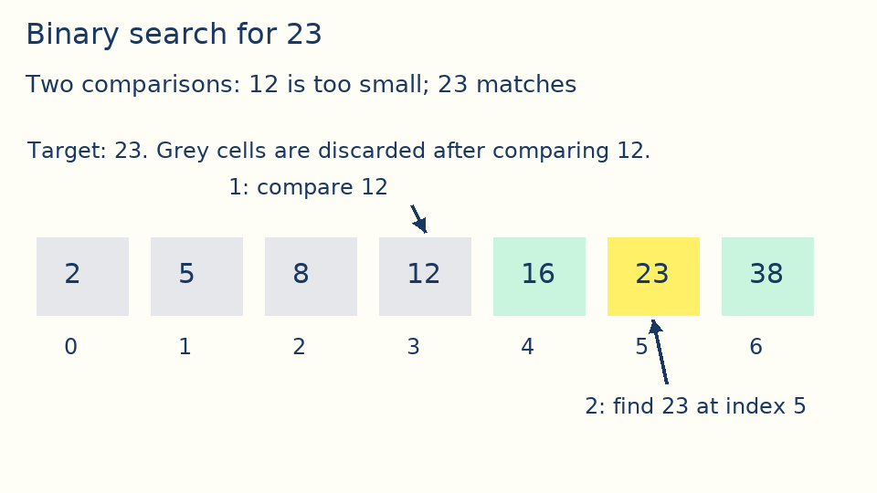

Understand
Binary search requires sorted data. For target 23 in [2, 5, 8, 12, 16, 23, 38], the first midpoint is 12. Discard it and all smaller values. The next midpoint is 23 at index 5, so the search succeeds.

Compare midpoint 12, discard the left four values, then find 23 at index 5.
Alt text: A sorted array shows 12 as the first comparison and 23 as the match; indices 0 to 3 are discarded.
Recall
Why must the values be sorted? A midpoint comparison must identify which half can contain the target.